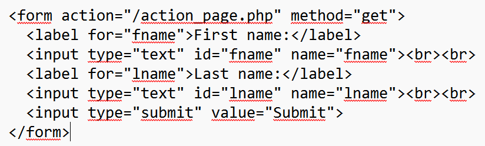
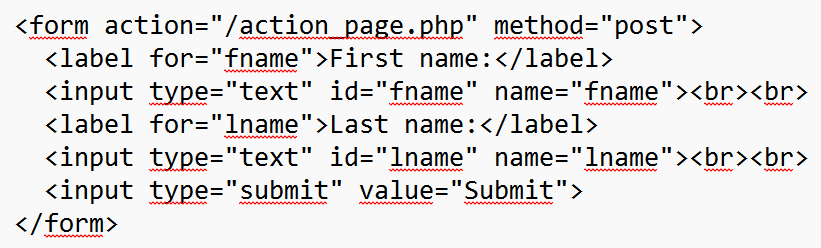

TEORIA HTML (Hyper Text Markup Language)

Sintassi di GET e POST:
METODO GET CHE E' CONSIDERATO DI DEFAULT:
METODO POST:
DEFINIZIONE METODO POST:
Il metodo POST viene utilizzato per inviare dati a un server per creare/aggiornare una risorsa.
I dati inviati al server tramite POST vengono memorizzati nel corpo della richiesta HTTP.
Come funziona a livello di server:
Quando il server riceve una richiesta POST, può accedere ai dati inviati attraverso l'oggetto request
(ad esempio, in PHP, usando $_POST per ottenere i dati). Il server può quindi elaborare questi dati,
come ad esempio inserire informazioni in un database, inviare un'email, o restituire una risposta personalizzata
all'utente.
Differenza tra registrazione e Login:
La registrazione crea un record all'interno della tabella.Il login confronta le credenziali inserite con il record presenti.
URL (appunti):
get:file:///C:/action_page.html?menu=SECONDO&cars=audi
post:
file:///C:/action_page.html
SPIEGAZIONE FORM
il tag form e' l'elemento che definisce un modulo HTML.
Un modulo permette agli utenti di inserire dati che poi vengono inviati a un server
(ad esempio, a un file PHP).
All'interno di questo form si trovano:
action="nome_file.php" => Questo e' l'URL o il percorso a cui inviare i dati del modulo una volta che l'utente preme il tasto di invio.
In questo caso, i dati saranno inviati al file php corrispondente che si trova nella stessa cartella del file HTML.
method="POST" => Indica che i dati del modulo devono essere inviati tramite il metodo POST.
Questo significa che i dati non saranno visibili nell'URL del browser, ma verranno inviati nel corpo della richiesta HTTP.
Il metodo POST e' generalmente usato per inviare informazioni sensibili, come una password.
il tag label => serve per associare un testo descrittivo a un campo di input.
In questo caso, il testo "Inserisci email" appare come etichetta del campo dove l'utente deve scrivere la propria email.
Questo e' un campo di input di tipo testo.
L'utente puo' inserire la propria email.
Il name="email" e' importante perche' il valore inserito in questo campo verrà inviato al server con il nome "email", che sarà poi accessibile nel file PHP.
infine, c'e' il bottone di invio del modulo.
Quando l'utente preme questo pulsante, il modulo viene inviato al server e i dati inseriti nei campi vengono inviati al file php corrente.
Che differenza c'e' tra GET e POST?
il GET si vede nel URL: segna la composizione dei parametri.
Es: first_name e last_name.
fname e lname sono campi che vengono composti ed e' la parte più importante del passaggio dei valori ed è il nome della variabile.
Siccome esiste il metodo POST, come faccio a recuperare le variabili che passano dal HTML al web server?
come si dichiara una variabile in php?
si mette il dollaro davanti:
'$', poi il nome della variabile "$var" e infine dico che dalla pagina html che sto utilizzando fai passare la variabile che ha name="fname" tramite il metodo POST:
$var = $_POST['fname'];
Una piccola precisazione sull'html e php:
Il server e' impostato di default affinche' possa interpretare il file cioe' il codice php, soltanto in file con estensione .php .
Se metto lo script php dentro ad un file con estensione .html, e se il server non e' impostato,
l'interpretazione dello script non funziona, ma puo' essere impostato;
ma di default non è corretto,
ed e' buona tecnica di programmazione perche' il server vuole dedicare l'interpretazione solo alle pagine php.
Differenza tra browser e motore di ricerca:
La differenza tra il browser e il motore di ricerca è che il browser è
l'applicazione che utilizziamo per navigare su internet (ad esempio Chrome,
Safari o Edge), mentre il motore di ricerca è un sito o servizio che utilizziamo
con il browser per cercare informazioni e siti su internet (ad esempio Google o Bing).
Differenza tra una pagina web in locale e una pagina caricata sul server:
Pagina Web in Locale (Localhost):
-La pagina è memorizzata e accessibile solo sul tuo computer. Non è visibile ad altri utenti.
-Si può accedere tramite un URL come http://localhost o http://127.0.0.1
(questi indirizzi fanno riferimento al computer locale).
-Server locale: Per visualizzare la pagina in locale,
bisogna avere un server web o un server integrato che esegue il file nell'ambiente di sviluppo.
Pagina caricata sul server:
-Una pagina web su un server è un file caricato su un server web remoto,
il quale può essere accessibile da qualsiasi dispositivo connesso a Internet, tramite un dominio o un indirizzo IP pubblico.
-Accesso: La pagina è accessibile da chiunque abbia una connessione internet e l'indirizzo (URL) corretto.
Può essere visualizzata da utenti in tutto il mondo.
L'URL inizia con http:// o https:// (ad esempio https://www.miosito.com/pagina.html).
-Il server web ospita il file e lo invia al browser del client che lo richiede.
Il server può anche gestire richieste più dinamiche (ad esempio, per interagire con database) tramite linguaggi come PHP.
TEORIA PHP (Hypertext Preprocessor)
<?php
if ($_SERVER["REQUEST_METHOD"] == "POST") {
// Recupera i dati dal modulo HTML
$first_name = isset($_POST["fname"]) ? $_POST["fname"] : "";
$last_name = isset($_POST["lname"]) ? $_POST["lname"] : "";
// Stampa i dati a schermo
echo "Dati ricevuti dal modulo:";
echo "Nome: " . htmlspecialchars($first_name);
// htmlspecialchars per evitare problemi di sicurezza echo "Cognome: " . htmlspecialchars($last_name)";
} else {
// Se non e' una richiesta POST, mostra un messaggio di errore
echo "Errore: Metodo non consentito";
}
?>
SPIEGAZIONE
1. Raccolta dei dati inviati tramite il modulo (con il metodo POST):
$email = $_POST["email"];
$password = $_POST["password"];
La superglobale $_POST contiene tutti i dati inviati con il metodo POST.
In questo caso, il codice recupera il valore dei campi 'email' e 'password' inviati dall'utente.
2. Visualizzazione dei dati con echo:
echo $email . "
" . $password;
Il comando echo in PHP serve a visualizzare i valori sullo schermo.
In questo caso, il codice concatena la variabile $email con il tag HTML <br>,
e successivamente concatena anche la variabile $password,
per far sì che i valori vengano mostrati su due righe separate.
Non è sicuro mostrare la password in chiaro in un'applicazione reale.
Utilizzo delle variabili in php
array in php:
Sintassi:Questa è un array di variabili: (chiaramente è d'obbligo fare il post per ogni valore contente nell'array)
$variabili = array(
"var1" => $_POST['var1'],
"var2" => $_POST['var2'],
"var3" => $_POST['var3'],
"var4" => $_POST['var4'],
"var5" => $_POST['var5'],
"var6" => $_POST['var6'],
"var7" => $_POST['var7'],
"var8" => $_POST['var8'],
"var9" => $_POST['var9'] ?? ''
);
In PHP, un array è una struttura dati che permette di memorizzare più valori in una singola variabile. Ogni valore nell'array è identificato da una "chiave", che può essere numerica o associativa.
Gli array sono utilizzati per raggruppare più dati, che possono essere dello stesso tipo o anche di tipi diversi.
$cars = array("Volvo", "BMW", "Toyota");
Questa spiegazione è già descritta nell'esercizio:
isset e unset:
Il codice PHP si intervalla al codice HTML, delimitato dai tag <?php ... ?> .
I delimitatori permettono al server web di riconoscere il codice, che viene eseguito.
L’output viene combinato con la parte statica che sta al di fuori dai tag PHP, e il tutto è inviato al browser (client).
Per “eseguire” lo script, devo richiederlo al web-server tramite il browser http://localhost/miapagina.php .
PHP è un linguaggio di programmazione case sensitive, il che significa che le lettere maiuscole e minuscole sono considerate diverse.
Ad esempio, la variabile $nome e la variabile $Nome sono due variabili diverse in PHP.
Tuttavia, ci sono alcune eccezioni a questa regola.
Ad esempio, i nomi delle funzioni in PHP non sono case sensitive,
il che significa che la funzione count() e la funzione COUNT() sono equivalenti.
Inoltre, PHP è insensibile agli spazi bianchi, il che significa che gli spazi bianchi (come gli spazi, i tab e le nuove righe) non influiscono sulla semantica del codice PHP.
Ad esempio, il seguente codice PHP è equivalente:
$nome='Mario'; è equivalente a $nome = 'Mario';
Questa regola non vale per le stringhe.
Gli spazi bianchi all'interno di una stringa sono considerati parte della stringa stessa.
Il tag textarea rappresenta un controllo di modifica di testo in formato testo normale a più righe,
utile quando si vuole consentire agli utenti di inserire una quantità considerevole di testo libero.
● il tag option viene utilizzato per definire un elemento contenuto in un nella select, un optgroup o un datalist.
● il tag datalist per fornire un elenco di opzioni predefinite per un campo di input.
● il tag select: per creare menu a tendina.
● il tag optgroup crea un raggruppamento di opzioni all'interno di un elemento select.
Invio dei dati con HTTP - GET
43 Reti di Calcolatori HTTP e il Word Wide Web- I dati del form possono essere inviati con una richiesta HTTP di tipo GET;
- I parametri sono accodati all’URL della risorsa che li riceve usando in genere il carattere ? come separatore;
- Questo metodo permette di associare la richiesta con i parametri ad un URL (può essere usato come hyperlink, generato in automatico,..);
- Esiste un limite al numero dei caratteri e inoltre l’URL deve essere composto da caratteri ASCII;
- I caratteri non ASCII e i caratteri speciali (?,=,&,..) sono codificati con la sequenza % seguito dalle due cifre esadecimali.
- Lo spazio è in genere codificato con il carattere + invece che con %20.
- Il metodo GET non dovrebbe essere usato per passare informazione sensibile (es. password) perché è in chiaro nell’URL e può essere memorizzato nei proxy.
Quoting
In PHP, il "quoting" si riferisce al processo di inserimento di citazioni (o delimitatori) all'interno di una stringaper indicare in modo esplicito dove inizia e dove finisce la stringa stessa.
Le citazioni sono utilizzate per definire il testo letterale di una stringa.
PHP supporta diverse forme di quoting, tra cui:
Single Quotes: Le stringhe racchiuse tra singole citazioni (') sono considerate "stringhe con singole citazioni"
e tutto il loro contenuto è trattato come testo letterale.
Le variabili all'interno di queste stringhe non vengono valutate o espanse.
Esempio:
$nome = 'John';
echo 'Il mio nome è $nome'; // Output: Il mio nome è $nome
Double Quotes: Le stringhe racchiuse tra doppie citazioni (")consentono la valutazione e l'espansione
delle variabili all'interno di esse.
Le sequenze di escape come \n e \t sono interpretate all'interno delle doppie citazioni.
Esempio:
$nome = 'John';
echo "Il mio nome è $nome"; // Output: Il mio nome è John
Escaping
L'escaping nelle stringhe PHP si riferisce alla pratica di inserire un carattere di escape,ovvero un carattere preceduto da un backslash (\),
per rappresentare caratteri speciali all'interno di una stringa.
Ad esempio, per rappresentare una singola virgoletta all'interno di una stringa racchiusa tra virgolette doppie,
è necessario utilizzare il carattere di escape (\) prima della virgoletta,
in questo modo:
"L'auto è \"rossa\"" .
In PHP, i caratteri speciali che richiedono l'utilizzo di un carattere di escape
includono le virgolette singole e doppie, il backslash stesso, il carattere di nuova riga (\n), il carattere di ritorno a capo (\r),
il carattere di tabulazione (\t), il carattere di allineamento verticale (\v), il carattere di cancellazione (\f) e altri.
L'escaping è spesso utilizzato quando si manipolano stringhe che contengono caratteri speciali,
ad esempio quando si creano query SQL o
quando si manipolano stringhe HTML.
In questi casi, è importante utilizzare l'escaping per evitare errori di sintassi o vulnerabilità di sicurezza.
not null coalescing operator
L'operatore "??", not null coalescing operator, è stato introdotto in PHP 7 e serve a restituire il primo valore che non è null.La sintassi è la seguente: $valore = $operando1 ?? $operando2 ?? $operando3;
In questo esempio, viene valutato il primo operando.
Se non è null, il suo valore viene assegnato a $valore.
Se invece è null, viene valutato il secondo operando e così via,
finché non viene trovato un valore che non sia null.
L'operatore "??", quindi, è molto utile per assegnare un valore di default a una variabile se non è ancora stata assegnata un valore.
Ad esempio:
$nome = $_GET['nome'] ?? 'Anonimo';
In questo esempio, se la chiave nome esiste nell'array $_GET, il suo valore viene assegnato a $nome.
Altrimenti, viene assegnato il valore "Anonimo".
Per garantire la robustezza delle password durante la registrazione,
è possibile implementare una serie di regole che verifichino se le password soddisfano determinati criteri, come la lunghezza minima, la presenza di lettere maiuscole, minuscole,
numeri e caratteri speciali. Ecco come puoi farlo:
● Lunghezza Minima: Assicurati che la password abbia una lunghezza minima. Ad esempio, una password deve contenere almeno 8 caratteri.
● Lettere Maiuscole e Minuscole: Richiedi la presenza sia di lettere maiuscole che minuscole nella password. Questo rende la password più robusta.
● Numeri: Assicurati che la password contenga almeno un numero.
● Caratteri Speciali: Richiedi la presenza di almeno un carattere speciale nella password,
come "!@#$%^&*()_+[]{}|;:,.<>/?". I caratteri speciali aggiungono ulteriori complessità alla password.
connessione al database:
Come stampare una tabella di un database:
controllo della connessione del DB